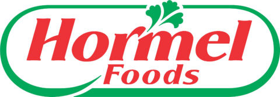

호멜 Hormel
호멜(Hormel)은 육류를 비롯한 가공 식품과 냉장 식품을 생산하고 여러 식품 브랜드를 운영하는 미국의 다국적 식품 가공 기업이다.
최종 업데이트

호멜은 어떤 브랜드인가
호멜은 햄과 소시지 등 육류 가공에서 출발해 다양한 가공 식품과 냉장 식품으로 사업을 확장한 기업이다. 1937년 대표적인 통조림 육류 제품을 출시했으며 1980년대에는 제품 영역을 넓혔다.
Hormel Foods Corporation은 자체 이름을 많은 제품에 사용하면서 Planters, Columbus Craft Meats, Dinty Moore, Jennie-O 등 여러 브랜드를 보유한다. 제품은 전 세계 80개국 이상에서 판매한다.
한국에서는 식품·유통 기업들과 에이전트 및 판매 계약을 맺어 제품을 공급한다.
호멜은 어떻게 시작되고 성장했나
호멜은 1891년 George A. Hormel이 미국 미네소타주 오스틴에서 설립했다.
그는 500달러를 빌려 육류 사업을 시작했으며, 동업 관계를 청산한 뒤 시더강 변의 유제품 공장 건물에서 독립적인 육류 가공 사업을 운영했다. 초기에는 가죽, 달걀, 양모, 가금류 거래를 병행했고 20세기 첫 10년 동안 미국 여러 도시에 물류 센터를 열었다.
1926년 미국 최초의 통조림 햄을 선보였고 1937년에는 대표 통조림 육류 제품을 출시했다. 회사는 1993년 Hormel Foods Corporation으로 사명을 변경했다.
호멜의 브랜드 아이덴티티는 무엇인가
육류 가공에서 출발해 통조림·냉장 식품과 견과류까지 확장했으며, 자체 이름과 다수의 식품 브랜드를 함께 운영하는 점이 특징이다.
호멜의 대표 제품과 서비스는 무엇인가
초기 제품은 햄, 소시지와 기타 돼지고기·닭고기·쇠고기·양고기 가공품을 중심으로 구성했다. 이후 통조림 햄과 닭고기 제품군, 칠리, 전자레인지용 비냉동 식품과 베이컨 등으로 범위를 확대했다.
브랜드 포트폴리오에는 Planters, Columbus Craft Meats, Dinty Moore, Jennie-O가 포함되며, Jennie-O Foods 인수 후에는 The Turkey Store와 합병해 칠면조 사업을 강화했다. 2009년에는 합작사 Megamex Foods를 설립해 미국에서 멕시코식 소스와 식품을 제조·유통한다.
호멜은 지금 어떤 상태인가
호멜은 미국 오스틴에 본사를 두고 제품을 전 세계 80개국 이상에서 판매한다. 2013년 땅콩버터 브랜드를 인수하고 2015년 육류 가공업체 Applegate Farms를 인수했으며, 2021년에는 Planters와 견과류 사업 부문을 인수해 브랜드 구성을 확대했다.
코로나19 범유행 당시에는 여러 육류 가공 공장을 임시 폐쇄하고 방역 조치를 시행했다.
호멜 로고는 어떻게 변해왔나
자주 묻는 질문
호멜는 어느 나라 브랜드인가요?
호멜는 미국의 식음료 브랜드입니다.
호멜는 언제 설립되었나요?
호멜는 1891년 설립되었습니다.
호멜의 브랜드 아이덴티티는 무엇인가요?
육류 가공에서 출발해 통조림·냉장 식품과 견과류까지 확장했으며, 자체 이름과 다수의 식품 브랜드를 함께 운영하는 점이 특징이다.
호멜의 대표 제품은 무엇인가요?
초기 제품은 햄, 소시지와 기타 돼지고기·닭고기·쇠고기·양고기 가공품을 중심으로 구성했다.
호멜는 현재 어떤 상태인가요?
호멜은 미국 오스틴에 본사를 두고 제품을 전 세계 80개국 이상에서 판매한다.
호멜의 창업자는 누구인가요?
호멜의 창업자는 George A. Hormel입니다(위키데이터 기준).
호멜의 본사는 어디에 있나요?
호멜의 본사는 오스틴에 있습니다(위키데이터 기준).
출처와 검증
호멜 관련 참고: 공식 웹사이트 · 위키데이터 Q1454852 · 한국어 위키백과 · 영어 위키백과. 브랜드명은 한글과 원어를 함께 표기하되 데이터에 없는 표기는 만들지 않습니다. 기원 국가·설립연도는 검수된 정의문에서 확인된 값을 우선하고, 없을 때만 공식 웹사이트 URL이 일치하는 위키데이터 개체의 값을 씁니다. 위키데이터 값은 2026-09-12 기준입니다.